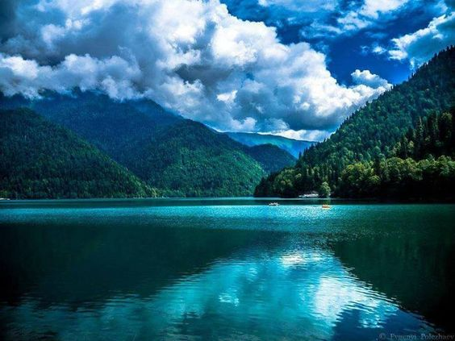

რიწის ტბა მდებარეობს აფხაზეთში, გუდაუთის მუნიციპალიტეტში, მდინარე ბზიბის აუზში, ზღვის დონიდან 884 მეტრზე (აფხაზეთის ტერიტორია ამჟამად ოკუპირებულია რუსეთის მიერ). შერეული ტყიანი მთებით გარშემორტყმული დიდი ლურჯი ტბა არაჩვეულებრივად ლამაზი სანახაობაა და მნახველზე დიდ შთაბეჭდილებას ახდენს. რიცას ტბა და მისი შემოგარენი ბრწყინვალეა ყველა სეზონზე. ტბის აუზი წარმოიქმნება გაგრის ქედის სამხრეთ-აღმოსავლეთი კალთიდან ჩამოვარდნილი კლდის ცვენით, მდინარე ლაშიფსეს ადიდების შედეგად. რიცას ტბის ზედაპირის ფართობია 1,49 კმ², მაქსიმალური სიღრმე - 101 მეტრი. ეს არის ყველაზე ღრმა ტბა კავკასიაში. მას უერთდება 6 მდინარე, მათგან ყველაზე დიდია ლაშიფსე. ტბიდან მოედინება მდინარე იუფშარა. წყლის დონე მაქსიმუმს მაისში აღწევს, ყველაზე დაბალს კი - თებერვალში. თევზიდან ტბაში მხოლოდ კალმახი ცხოვრობს. 1946 წელს ტბისა და მისი შემოგარენის ბუნების დასაცავად შეიქმნა რიცას მკაცრი ნაკრძალი. რიცა ერთ-ერთი ულამაზესი ტბაა საქართველოში და აქვს დიდი ტურისტული პოტენციალი.
